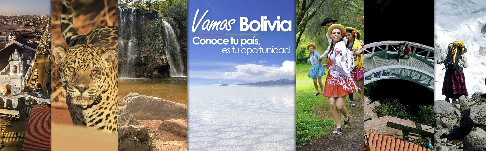

Bolivia es un país con una gran riqueza turística gracias a su diversidad de paisajes, culturas y tradiciones. Entre sus principales atractivos se encuentran el impresionante Salar de Uyuni, considerado el desierto de sal más grande del mundo, el majestuoso Lago Titicaca, y ciudades históricas como Sucre y Potosí. Además, el país cuenta con parques nacionales, montañas andinas, selvas amazónicas y una rica herencia cultural de los pueblos indígenas. El turismo en Bolivia ofrece a los visitantes la oportunidad de disfrutar de paisajes únicos, gastronomía tradicional y festividades que reflejan la identidad y la historia de la nación.